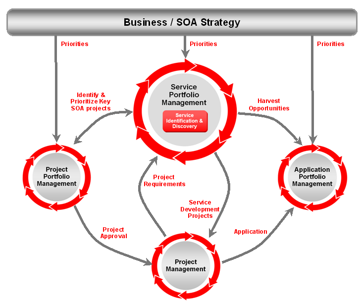

OUM |
Task Overview |
||
Method Navigation |
Current Page Navigation |
||
|
|
||||||||
The purpose of this task is to inventory the services of the enterprise. The type of services you inventory depends on the engagement. For example, for a SOA effort, you will inventory SOA services, while for a cloud effort, you will inventory cloud services (which may or may not be SOA services).
When you inventory services, this includes existing services, services pending to go live and services that have been identified to be developed. This is all organized into an initial Service Portfolio. For each engagement, this is a singly instantiated task. The type of services that you inventory typically will be limited to those that have an enterprise-level reuse potential, and are within the scope of the engagement at hand. The result is a repository of information about the services, including but not limited to:
In short, this should be a complete single-source of information about service policies, service level agreement (SLA) contracts, design and implementation artifacts and interdependencies that govern service usage.
The majority of this task is written in the context of SOA services.
In some cases, SOA service repositories are merged with service registries. However, do not confuse the design-time focus of a Service Portfolio with a runtime focus on services in production. This task concerns the design-time focus.
Service Portfolio Management is related to other portfolio management disciplines. IT Project Portfolio Management allows enterprises to collaboratively propose, fund, prioritize, plan, align and control their IT initiatives to achieve their objectives while understanding the impact of changing or adding initiatives to their portfolios. IT Application Portfolio Management utilizes operational metrics to measure the benefits and continual investment into each application and how it aligns and supports the business. The following show the interaction of Service Portfolio management and traditional Portfolio Management disciplines.

Service Portfolio Management enables an enterprise to manage a long-term Service Portfolio that defines the right set of services and enables when, where, and how they are used. Service Portfolio Management allows enterprises to:
This task is only applicable when service-oriented architecture (SOA) is involved in some form.
INIT.ACT.EDGI Execute Discovery - Gather Information (As Is)
Service Portfolio
The initial version of the work product created in this task, contains an overview of those services that have an enterprise-level reuse potential. When an Enterprise Repository has been established, the work product is the population of that repository with the inventoried services and their relationships to other IT assets in the repository. If the organization does not have a physical Enterprise Repository, capture the inventoried services and their relationships to other IT assets in the OUM Service Portfolio template.
The tooling choice for the Enterprise Repository is determined in the Governance task, Define Policy Implementation Tooling (GV.060). Typically, the implementation of an Enterprise Repository is done in the context of an Implement project. The implementation of the organization's procedures and policies governing the Enterprise Repository are established and maintained in the Governance task, Implement Governance (GV.100). If an Enterprise Repository is being used, both of these Governance tasks would have preceded this task, Inventory Services.
You should follow these steps:
No. |
Task Step | Component | Component Description |
|---|---|---|---|
1 |
Inventory current services. | Service Catalog | The Service Catalog is populated with a listing of the existing services according to the Services Meta Data Description (GV.096). |
2 |
Inventory planned services. | Service Catalog | The Service Catalog is populated with a listing of the planned services. |
3 |
Identify overlaps. | Overlap and Redundancy | This component shows the overlap or redundancy between services as well as identifies services that are not in use. |
This task is most effectively executed when it is limited to an inventory of those service that have a potential reuse for the engagement at hand, or that are likely to be reused in project that have been identified. What should be prevented is an inventory for the sake of inventory, as that can easily become a time-consuming task with a result that has a relatively limited value.
In its final state, the Service Portfolio should list current and planned services that have an enterprise-level reuse potential. In the case of a scope that limited to implementing one or more business processes that use some known systems or to integrating some existing systems, an initial version might be limited to those systems.
During some successive engagement, the Service Portfolio may be populated in this task with a new set of services. However, this task is not meant to cover the ongoing addition or maintenance of services as that should be covered by an (implicit or explicit) last step of the task discovering, or maintaining those services.
Perform an inventory to identify all existing services relevant for the initial Service Portfolio. Candidates are (reusable) business services like “Get Customer Profile,” or “Create Customer Order,” but it may also involve utility-like services such as, “Get Product Catalog,” “Get Countries” or “Get Postal Codes.” Individual programs, projects, IT departments, etc., may have a listing of existing services. Also existing systems documentation may list the services that those systems can deliver.
Services that have no reuse potential, such as services that have been created to do point-to-point integration and offer very specific functionality to do just that, normally can be safely ignored. When more than one version of the service exists, the most recent version is probably the only one relevant for the inventory. Fine-grained services that are used to compose course-grained services, normally can also be ignored for now, as they will typically be inventoried within the scope of a project that has a need for them, in the Service Portfolio - Candidate Services (Implement task, RA.025).
Capture the services, and document these following the Services Meta Data Description (GV.096), if available. If no such repository meta data description exists yet, capture the minimal set of information for each service including the name, a description of its contract, and the interface provided. In case of web services that have (reachable) WSDL, capture that WSDL so that later it can be analyzed in more detail. Also classify services according to the taxonomy that has been determined in the Services Meta Data Description (GV.096).
Identify all services that are planned, and document these following the Services Meta Data Description (GV.096), if available.
You may choose to also identify any overlap and redundancy between services. This could be important information to determine optimization options. As this can be a fairly time-consuming task, be certain not to go beyond the scope of the engagement.
This task has supplemental guidance that should be considered if you are doing a SOA Application Integration Architecture (AIA) implementation. Use the following to access the task-specific supplemental guidance. To access all SOA AIA supplemental information, use the OUM SOA AIA Supplemental Guide.
This task involves the following method roles:
Role |
Responsibility |
% |
|---|---|---|
Enterprise Architect |
Interview stakeholders to compile the IT Services Portfolio. | 100 |
Customer Enterprise Architect |
Assist in interviewing stakeholders to compile IT Services portfolio. | * |
Customer CTO |
Assist in interviewing stakeholders to compile IT Services portfolio. | * |
Customer System Expert |
Assist in interviewing stakeholders to compile IT Services portfolio. | * |
Customer Project Managers |
Assist in interviewing stakeholders to compile IT Services portfolio. | * |
* Participation level not estimated.
You need the following for this task:
Prerequisite |
Usage |
|---|---|
Services Meta Data Description (GV.096) |
Use the Services Meta Data Description to determine what information about the services should be captured and how to classify these services. |
Governance Implementation (GV.100) |
If an Enterprise Repository is in use, the Governance Implementation (that is, the related policies and processes) describes how to govern the inventoried services and their relationships to other IT assets. In addition, ensure that the inventoried services and their relationships are added/updated in the repository. |
The following techniques are available to assist with this task:
Technique |
Comments |
|---|---|
Use this technique to understand the justification process for a service through the analysis of benefits and risks. |
The following templates and tools are available to assist with this task:
Template File Name |
Comments |
|---|---|
| MS EXCEL - Use this template to create a Service Portfolio when a physical Enterprise Repository is not available. |
Tool |
Comments |
|---|---|
| The Oracle Enterprise Repository is a COTS Enterprise Repository tool solution that is used to establish and maintain an Enterprise Repository. |
The Service Portfolio is used in the following ways:
Distribute the Service Portfolio as follows:
Use the following criteria to check the quality of this work product:

Copyright © 2006, 2016, Oracle and/or its affiliates. All rights reserved.